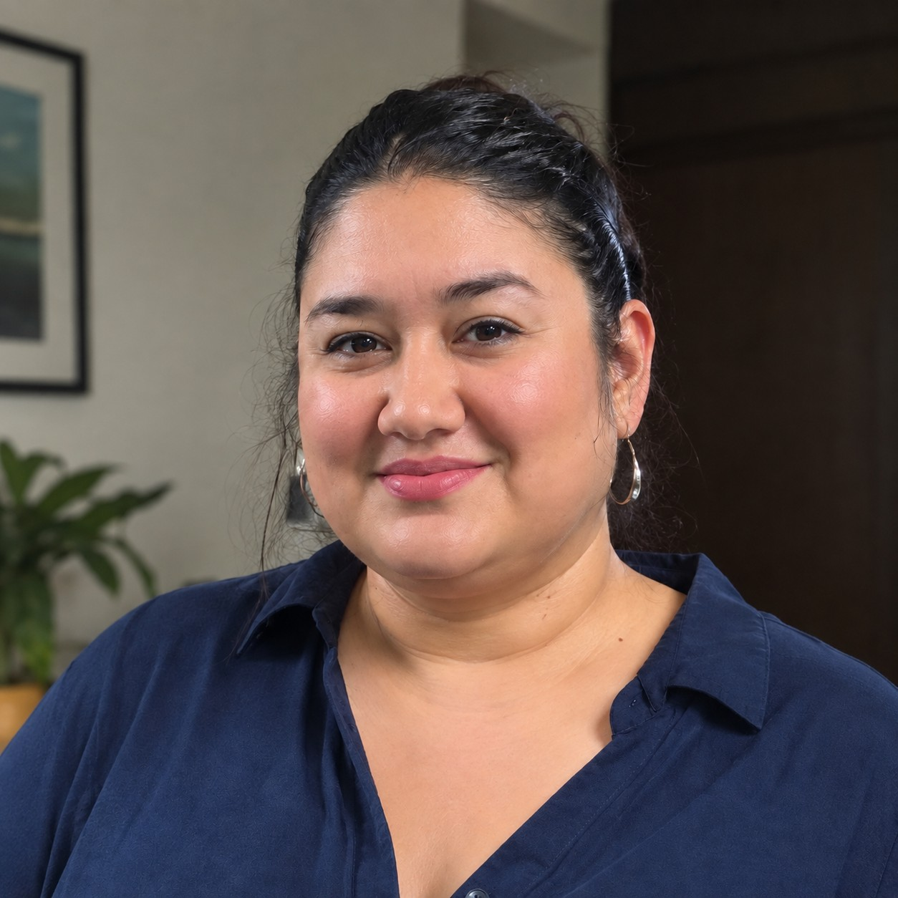

Profile — Claudia Casso

Hello everyone! My name is Claudia Casso, and I am 43 years old from San Antonio, Texas. I am currently pursuing a Master of Education in Educational Technology at UTRGV, and I expect to graduate in Fall 2027.
My educational and professional background combines education, psychology, and the performing arts. I earned a Bachelor of Arts in Theatre Arts with minors in Education and Psychology from the University of the Incarnate Word.
Professionally, I have worked as a theatre arts instructor, youth development instructor, performing arts program coordinator, theatre director, and education and community program specialist. These experiences have allowed me to work with children and adolescents while helping them strengthen their creativity, confidence, communication, and teamwork skills.
My goal in earning this degree is to combine my background in education and the performing arts with educational technology. I am especially interested in learning how instructional design and technology can be used to create engaging, accessible, and meaningful learning experiences for diverse learners. After graduation, I hope to apply these skills in a position where I can develop educational programs, instructional materials, or technology-supported learning opportunities.
Outside of school, theatre and creative expression continue to be important interests of mine. I look forward to learning from others' experiences, exchanging ideas, and building professional connections throughout EDTC 6320: Instructional Technology.